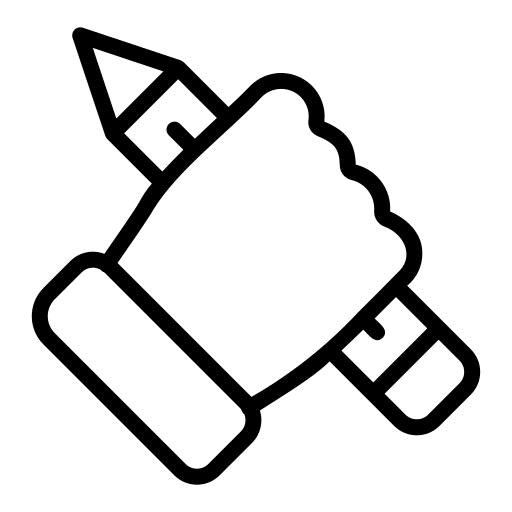
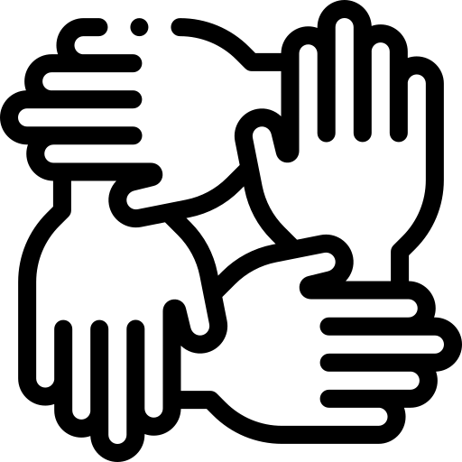
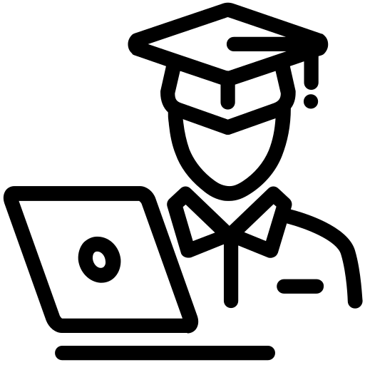

Pilares da Educação
Pilares da educação são itens essenciais para que todos os processos e etapas educacionais possam ser desenvolvidos.
Diferente das estruturas arquitetônicas, os pilares da educação são maleáveis para acompanhar a evolução natural da sociedade. Ou seja, a ideia é dispor de 4 elementos que consigam “abraçar” avanços tecnológicos, mudanças de comportamentos e estruturas sociais.
Para isso, existem 4 pilares da educação. São eles:
Aprender a conhecer

Mais importante que adquirir conhecimento é saber como fazê-lo. Esse pilar da educação trata, portanto, da necessidade em instruir o indivíduo a buscar, pelos próprios meios, maneiras de descobrir e absorver os mais diversos assuntos. Desta forma ele pode identificar quais instrumentos de aprendizado melhor se encaixam em seu perfil.
Aprender a fazer
O aprender a fazer é um pilar que está presente em algumas instituições. Trata-se de colocar em prática o aprendizado adquirido. Esse pilar, no relatório, também fala sobre a adaptação do conhecimento para a prática profissional.
Aprender a conviver
Esse é, talvez, um dos pilares da educação mais difíceis de ser praticado em uma sociedade tão diversa quanto a nossa. Em um cenário cada vez mais polarizado, é extremamente complexo criar indivíduos que saibam viver e conviver com as diferenças. Neste pilar, portanto, temos a ideia de não apenas incluir indivíduos diferentes em uma convivência comum, mas também estabelecer um contexto igualitário.
Aprender a ser
Esse pilar da educação trata de estimular que todos possam descobrir quem são, com a possibilidade de pensar de forma autônoma e crítica. E, assim, criar e desenvolver seu próprio juízo de valor, com decisões baseadas na junção do conhecimento adquirido com suas crenças, valores e opiniões.